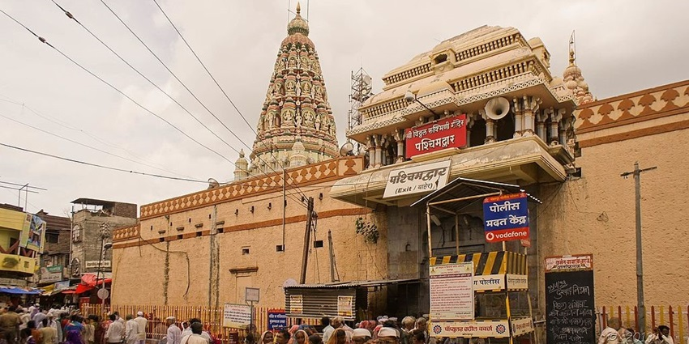
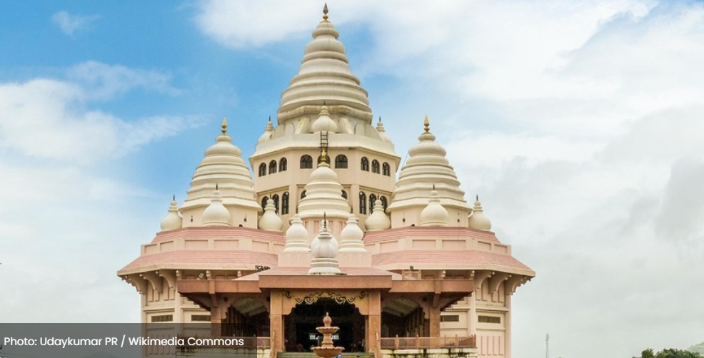
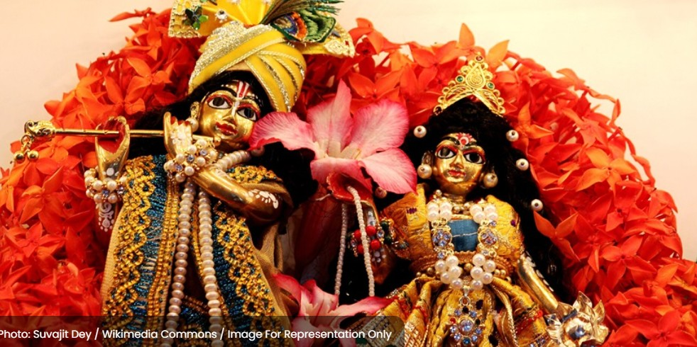
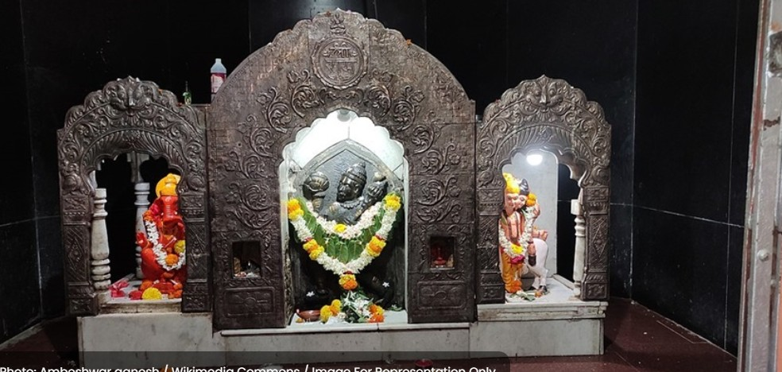
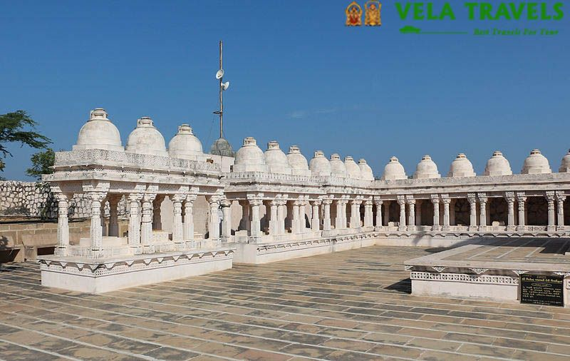
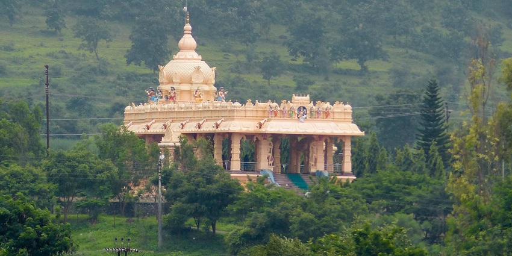
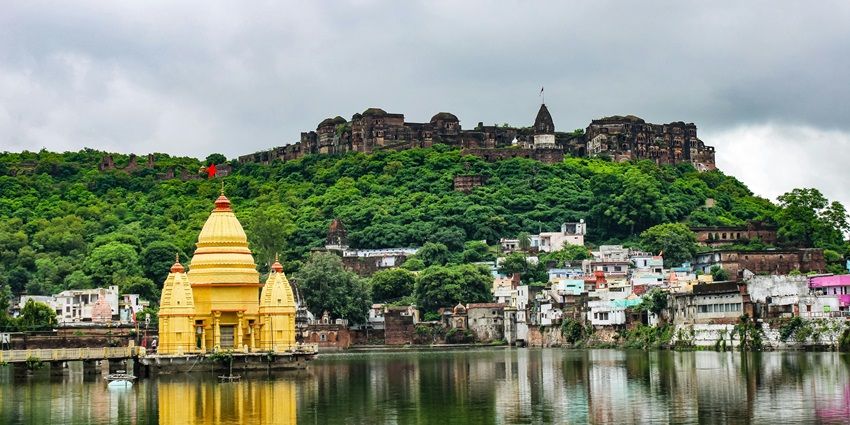
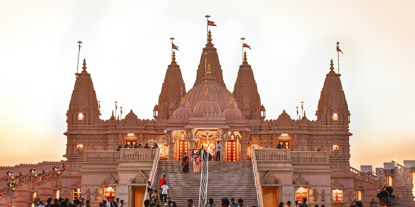
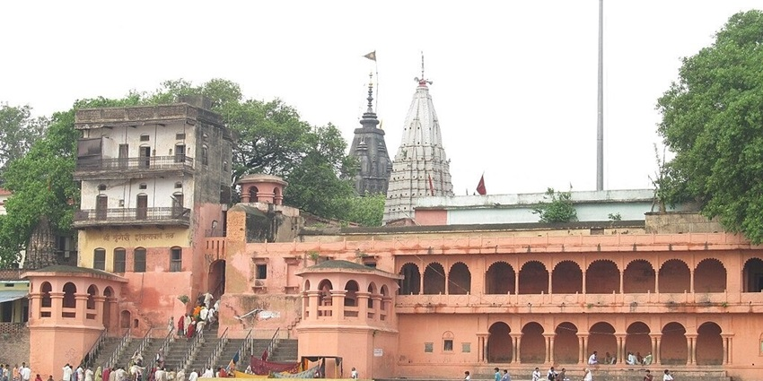

Places to Visit in Pandharpur
Shri Vitthal Rukmini Temple

Known as the crown jewel of Pandharpur, this temple is one of the most important pilgrimage sites in Maharashtra. Dedicated to Lord Vitthal and his consort Rukmini, this temple is famous for its stunning architecture and lively festivals, especially during Ashadhi Ekadashi. The temple attracts thousands of devotees who come to seek blessings and immerse themselves in its divine atmosphere, making it one of the top tourist attractions in Pandharpur.
Timings: 4 AM – 11 PM
Location: SH-141, Isbavi, Pandharpur, Maharashtra 413304
Distance: 2 km from Pandharpur Railway Station
Pundalik Temple

Dedicated to Pundalik, the revered devotee of Lord Vitthal, this temple is a calm spot located by the beautiful Chandrabhaga River. This temple holds significant importance in the region, believed to be the place where Lord Vitthal appeared to Pundalik. The peaceful surroundings and the sound of flowing water create a peaceful environment for reflection and prayer, making it one of the cherished places on the Pandharpur tourist places list.
Timings: 6 AM – 11 PM
Location: Near the banks of the Chandrabhaga River, Pandharpur, Maharashtra 413304
Distance: 3 km from Pandharpur Railway Station
ISKCON Pandharpur

ISKCON Pandharpur is a vibrant temple dedicated to Lord Krishna, run by the International Society for Krishna Consciousness. The temple’s architecture is stunning, and it hosts regular cultural programs, bhajans, and spiritual discourses. Devotees visiting this temple experience a lively atmosphere, making it the best addition to the places to visit in Pandharpur.
Timings: 4 AM – 1 PM, 2 PM – 8 PM
Location: ISKCON Temple Road, Shegaon Dumala, Maharashtra 413304
Distance: 5 km from Pandharpur Railway Station
Kala Maruti Mandir

This temple is devoted to Lord Hanuman and is famous for its distinctive black idol of the deity. Devotees visit this temple to pray for strength and courage, and it is particularly popular on Tuesdays and Saturdays. The temple’s charm and significance make it a worthy addition to the list of places to visit in Pandharpur.
Timings: 6 AM – 11:15 PM
Location: Pradakshina Road, Chouphala, Pandharpur, Maharashtra 413304
Distance: 2 km from Pandharpur Railway Station
Padmavati Mandir

Dedicated to Goddess Padmavati, the consort of Lord Vitthal, this temple is beautifully decorated and attracts numerous visitors seeking blessings for prosperity and happiness. Its peaceful ambience makes it a perfect spot for prayer and meditation, strengthening its importance among the best places in this sacred town.
Timings: 5 AM – 12 PM, 4 PM – 9 PM
Location: Railway Station Road, Pandharpur, Maharashtra 413304
Distance: 2 km from Pandharpur Railway Station
Namdev Mandir

Built-in dedication to Saint Namdev, a prominent saint and devotee of Lord Vitthal, this temple shows the teachings and philosophy of Namdev, and it is frequented by devotees wanting spiritual guidance. The temple’s pleasant atmosphere makes it a loved destination, highlighting its importance among the places for Pandharpur trip.
Timings:6 AM – 11 PM
Location: Pradakshina Road, Pandharpur, Maharashtra 413304
Distance: 2 km from Pandharpur Railway Station
Dnyaneshwar Mandir

This is a temple built to celebrate Sant Dnyaneshwar, a saint whose teachings greatly influenced Marathi literature and spirituality. It is decorated with beautiful carvings and is a peaceful place for worship. Visitors come here to seek inspiration from the saint’s teachings, supporting its position as a significant place to explore.
Timings: 6 AM – 11 AM, 4 PM – 10:30 PM
Location: Nath Chouk, Gandhi Rd, Chouphala, Pandharpur, Maharashtra 413304
Distance: 2 km from Pandharpur Railway Station
Shri Gopalkrishna Temple
This temple is another important religious site in Pandharpur, dedicated to Lord Krishna in his Gopala form. This temple, known for its beautiful idols and serene atmosphere, is among the best tourist places in Pandharpur. Visitors often come here to seek blessings and participate in the daily rituals. The temple stands as a testament to the deep-rooted devotion in the town, cementing its place among the top attractions of the town.
Timings: 6 AM – 12 PM, 5 PM – 9 PM
Location: M87W+GVH, Gopalpur, Maharashtra 413304
Distance: 3.5 km from Pandharpur Railway Station
Shri Gopalkrishna Temple

This temple is another important religious site in Pandharpur, dedicated to Lord Krishna in his Gopala form. This temple, known for its beautiful idols and serene atmosphere, is among the best tourist places in Pandharpur. Visitors often come here to seek blessings and participate in the daily rituals. The temple stands as a testament to the deep-rooted devotion in the town, cementing its place among the top attractions of the town.
Timings: 6 AM – 12 PM, 5 PM – 9 PM
Location: M87W+GVH, Gopalpur, Maharashtra 413304
Distance: 3.5 km from Pandharpur Railway Station
Vishnupad Temple

Among various other Pandharpur tourist places, this temple is situated near the sacred River Bhima and is dedicated to Lord Vishnu. The temple is known for its historical significance and beautiful architecture. Pilgrims gather here to pay their respects and offer prayers, especially during auspicious occasions. The calm riverside setting enhances the spiritual experience, making it one of the essential places to visit in Pandharpur.
Timings: 4:30 AM – 11:30 PM
Location: Gopalpur, Pandharpur, Maharashtra 413304
Distance: 3.5 km from Pandharpur Railway Station